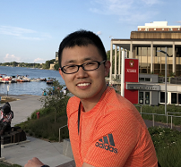

|
|
|  | Haoliang Sun (孙皓亮) Associate Professor |
About me
I am an associate professor at School of Software, Shandong University. I obtained my PhD degree (2020) and Bachelor degree (2014) in engineering from Shandong University under the supervision of Prof. Yilong Yin. I have also studied in Prof. Shuo Li’s group at Western University, CA in 2016 as the visiting student. After that, I was supported by China Scholarship Council (CSC) and spent one and half years at University of Wisconsin-Madison, under the supervision of Prof. Vikas Singh. Besides, I pursued an internship at Inception Institute of Artificial Intelligence (IIAI), UAE.
My research interests span both machine learning and computer vision, including weakly supervised learning, generative model, etc.